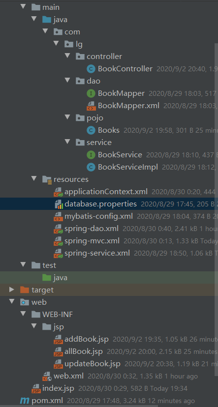
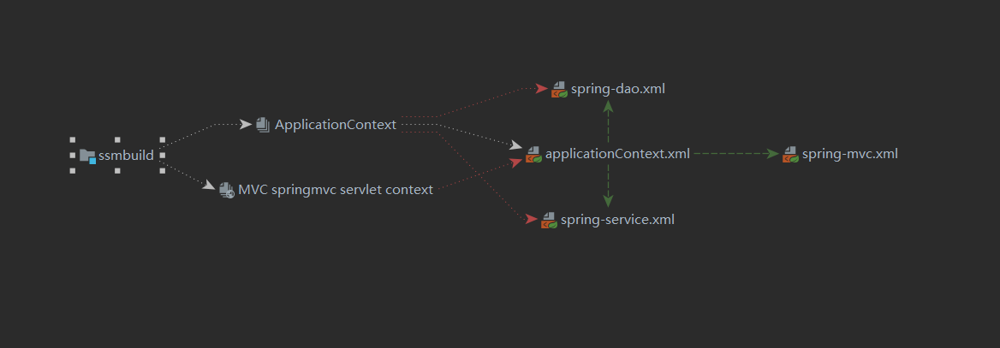

整合SSM框架
整合SSM
环境：
- IDEA
- MySQL 8.0.19
- Tomcat 9
Maven 3.6
要求：
熟练掌握MySQL数据库，Spring，JavaWeb及MyBatis知识，简单的前端知识；
数据库环境
创建一个存放书籍数据的数据库表
CREATE DATABASE `ssmbuild`;
USE `ssmbuild`;
DROP TABLE IF EXISTS `books`;
CREATE TABLE `books` (
`bookID` INT(10) NOT NULL AUTO_INCREMENT COMMENT '书id',
`bookName` VARCHAR(100) NOT NULL COMMENT '书名',
`bookCounts` INT(11) NOT NULL COMMENT '数量',
`detail` VARCHAR(200) NOT NULL COMMENT '描述',
KEY `bookID` (`bookID`)
) ENGINE=INNODB DEFAULT CHARSET=utf8
INSERT INTO `books`(`bookID`,`bookName`,`bookCounts`,`detail`)VALUES
(1,'Java',1,'从入门到放弃'),
(2,'MySQL',10,'从删库到跑路'),
(3,'Linux',5,'从进门到进牢');
基本环境搭建
1、新建一Maven项目！ssmbuild ， 添加web的支持
2、导入相关的pom依赖！
<dependencies>
<!--Junit-->
<dependency>
<groupId>junit</groupId>
<artifactId>junit</artifactId>
<version>4.12</version>
</dependency>
<!--数据库驱动-->
<dependency>
<groupId>mysql</groupId>
<artifactId>mysql-connector-java</artifactId>
<version>8.0.20</version>
</dependency>
<!-- 数据库连接池 -->
<dependency>
<groupId>com.mchange</groupId>
<artifactId>c3p0</artifactId>
<version>0.9.5.2</version>
</dependency>
<!--Servlet - JSP -->
<dependency>
<groupId>javax.servlet</groupId>
<artifactId>servlet-api</artifactId>
<version>2.5</version>
</dependency>
<dependency>
<groupId>javax.servlet.jsp</groupId>
<artifactId>jsp-api</artifactId>
<version>2.2</version>
</dependency>
<dependency>
<groupId>javax.servlet</groupId>
<artifactId>jstl</artifactId>
<version>1.2</version>
</dependency>
<!--Mybatis-->
<dependency>
<groupId>org.mybatis</groupId>
<artifactId>mybatis</artifactId>
<version>3.5.2</version>
</dependency>
<dependency>
<groupId>org.mybatis</groupId>
<artifactId>mybatis-spring</artifactId>
<version>2.0.2</version>
</dependency>
<!--Spring-->
<dependency>
<groupId>org.springframework</groupId>
<artifactId>spring-webmvc</artifactId>
<version>5.2.7.RELEASE</version>
</dependency>
<dependency>
<groupId>org.springframework</groupId>
<artifactId>spring-jdbc</artifactId>
<version>5.2.7.RELEASE</version>
</dependency>
<dependency>
<groupId>org.projectlombok</groupId>
<artifactId>lombok</artifactId>
<version>1.18.12</version>
</dependency>
</dependencies>
3、Maven资源过滤设置
<build>
<resources>
<resource>
<directory>src/main/java</directory>
<includes>
<include>**/*.properties</include>
<include>**/*.xml</include>
</includes>
<filtering>false</filtering>
</resource>
<resource>
<directory>src/main/resources</directory>
<includes>
<include>**/*.properties</include>
<include>**/*.xml</include>
</includes>
<filtering>false</filtering>
</resource>
</resources>
</build>
4、建立基本结构和配置框架！
com.lg.pojo
com.lg.dao
com.lg.service
com.lg.controller
mybatis-config.xml
<?xml version="1.0" encoding="UTF-8" ?> <!DOCTYPE configuration PUBLIC "-//mybatis.org//DTD Config 3.0//EN" "http://mybatis.org/dtd/mybatis-3-config.dtd"> <configuration> </configuration>applicationContext.xml
<?xml version="1.0" encoding="UTF-8"?> <beans xmlns="http://www.springframework.org/schema/beans" xmlns:xsi="http://www.w3.org/2001/XMLSchema-instance" xsi:schemaLocation="http://www.springframework.org/schema/beans http://www.springframework.org/schema/beans/spring-beans.xsd"> </beans>
Mybatis层编写
1、数据库配置文件 database.properties
jdbc.driver=com.mysql.cj.jdbc.Driver
jdbc.url=jdbc:mysql://localhost:3306/ssmbuild?serverTimezone=Asia/Shanghai&useSSL=true&useUnicode=true&characterEncoding=utf8
jdbc.username=root
jdbc.password=123456
2、IDEA关联数据库
3、编写MyBatis的核心配置文件
<?xml version="1.0" encoding="UTF-8" ?>
<!DOCTYPE configuration
PUBLIC "-//mybatis.org//DTD Config 3.0//EN"
"http://mybatis.org/dtd/mybatis-3-config.dtd">
<configuration>
<typeAliases>
<package name="com.lg.pojo"/>
</typeAliases>
<mappers>
<mapper resource="com/lg/dao/BookMapper.xml"/>
</mappers>
</configuration>
4、编写数据库对应的实体类 com.lg.pojo.Books
使用lombok插件！
package com.lg.pojo;
import lombok.AllArgsConstructor;
import lombok.Data;
import lombok.NoArgsConstructor;
@Data
@AllArgsConstructor
@NoArgsConstructor
public class Books {
private int bookId;
private String bookName;
private int bookCounts;
private String detail;
}
5、编写Dao层的 Mapper接口！
package com.lg.dao;
import com.lg.pojo.Books;
import java.util.List;
public interface BookMapper {
//增加一个Book
int addBook(Books book);
//根据id删除一个Book
int deleteBookById(int id);
//更新Book
int updateBook(Books books);
//根据id查询,返回一个Book
Books queryBookById(int id);
//查询全部Book,返回list集合
List<Books> queryAllBook();
}
6、编写接口对应的 Mapper.xml 文件。需要导入MyBatis的包；
<?xml version="1.0" encoding="UTF-8" ?>
<!DOCTYPE mapper
PUBLIC "-//mybatis.org//DTD Mapper 3.0//EN"
"http://mybatis.org/dtd/mybatis-3-mapper.dtd">
<mapper namespace="com.lg.dao.BookMapper">
<!--增加一个Book-->
<insert id="addBook" parameterType="Books">
insert into ssmbuild.books(bookName,bookCounts,detail)
values (#{bookName}, #{bookCounts}, #{detail})
</insert>
<!--根据id删除一个Book-->
<delete id="deleteBookById" parameterType="int">
delete from ssmbuild.books where bookID=#{bookId}
</delete>
<!--更新Book-->
<update id="updateBook" parameterType="Books">
update ssmbuild.books
set bookName = #{bookName},bookCounts = #{bookCounts},detail = #{detail}
where bookID = #{bookId}
</update>
<!--根据id查询,返回一个Book-->
<select id="queryBookById" resultType="Books">
select * from ssmbuild.books
where bookID = #{bookId}
</select>
<!--查询全部Book-->
<select id="queryAllBook" resultType="Books">
SELECT * from ssmbuild.books
</select>
</mapper>
7、编写Service层的接口和实现类
接口：
package com.lg.service;
import com.lg.pojo.Books;
import java.util.List;
//BookService:底下需要去实现,调用dao层
public interface BookService {
//增加一个Book
int addBook(Books book);
//根据id删除一个Book
int deleteBookById(int id);
//更新Book
int updateBook(Books books);
//根据id查询,返回一个Book
Books queryBookById(int id);
//查询全部Book,返回list集合
List<Books> queryAllBook();
}
实现类：
package com.lg.service;
import com.lg.dao.BookMapper;
import com.lg.pojo.Books;
import java.util.List;
public class BookServiceImpl implements BookService {
//调用dao层的操作，设置一个set接口，方便Spring管理
private BookMapper bookMapper;
public void setBookMapper(BookMapper bookMapper) {
this.bookMapper = bookMapper;
}
public int addBook(Books book) {
return bookMapper.addBook(book);
}
public int deleteBookById(int id) {
return bookMapper.deleteBookById(id);
}
public int updateBook(Books books) {
return bookMapper.updateBook(books);
}
public Books queryBookById(int id) {
return bookMapper.queryBookById(id);
}
public List<Books> queryAllBook() {
return bookMapper.queryAllBook();
}
}
OK，到此，底层需求操作编写完毕！
Spring层
1、配置Spring整合MyBatis，我们这里数据源使用c3p0连接池；
2、我们去编写Spring整合Mybatis的相关的配置文件；spring-dao.xml
<?xml version="1.0" encoding="UTF-8"?>
<beans xmlns="http://www.springframework.org/schema/beans"
xmlns:xsi="http://www.w3.org/2001/XMLSchema-instance"
xmlns:context="http://www.springframework.org/schema/context"
xsi:schemaLocation="http://www.springframework.org/schema/beans
http://www.springframework.org/schema/beans/spring-beans.xsd
http://www.springframework.org/schema/context
https://www.springframework.org/schema/context/spring-context.xsd">
<!-- 配置整合mybatis -->
<!-- 1.关联数据库文件 -->
<context:property-placeholder location="classpath:database.properties"/>
<!-- 2.数据库连接池 -->
<!--数据库连接池
dbcp 半自动化操作 不能自动连接
c3p0 自动化操作（自动的加载配置文件 并且设置到对象里面）
-->
<bean id="dataSource" class="com.mchange.v2.c3p0.ComboPooledDataSource">
<!-- 配置连接池属性 -->
<property name="driverClass" value="${jdbc.driver}"/>
<property name="jdbcUrl" value="${jdbc.url}"/>
<property name="user" value="${jdbc.username}"/>
<property name="password" value="${jdbc.password}"/>
<!-- c3p0连接池的私有属性 -->
<property name="maxPoolSize" value="30"/>
<property name="minPoolSize" value="10"/>
<!-- 关闭连接后不自动commit -->
<property name="autoCommitOnClose" value="false"/>
<!-- 获取连接超时时间 -->
<property name="checkoutTimeout" value="10000"/>
<!-- 当获取连接失败重试次数 -->
<property name="acquireRetryAttempts" value="2"/>
</bean>
<!-- 3.配置SqlSessionFactory对象 -->
<bean id="sqlSessionFactory" class="org.mybatis.spring.SqlSessionFactoryBean">
<!-- 注入数据库连接池 -->
<property name="dataSource" ref="dataSource"/>
<!-- 配置MyBaties全局配置文件:mybatis-config.xml -->
<property name="configLocation" value="classpath:mybatis-config.xml"/>
</bean>
<!-- 4.配置扫描Dao接口包，动态实现Dao接口注入到spring容器中 -->
<!--解释 ：https://www.cnblogs.com/jpfss/p/7799806.html-->
<bean class="org.mybatis.spring.mapper.MapperScannerConfigurer">
<!-- 注入sqlSessionFactory -->
<property name="sqlSessionFactoryBeanName" value="sqlSessionFactory"/>
<!-- 给出需要扫描Dao接口包 -->
<property name="basePackage" value="com.lg.dao"/>
</bean>
</beans>
3、Spring整合service层
<?xml version="1.0" encoding="UTF-8"?>
<beans xmlns="http://www.springframework.org/schema/beans"
xmlns:xsi="http://www.w3.org/2001/XMLSchema-instance"
xmlns:context="http://www.springframework.org/schema/context"
xsi:schemaLocation="http://www.springframework.org/schema/beans
http://www.springframework.org/schema/beans/spring-beans.xsd
http://www.springframework.org/schema/context
http://www.springframework.org/schema/context/spring-context.xsd">
<!-- 扫描service相关的bean -->
<context:component-scan base-package="com.lg.service" />
<!--BookServiceImpl注入到IOC容器中-->
<bean id="BookServiceImpl" class="com.lg.service.BookServiceImpl">
<property name="bookMapper" ref="bookMapper"/>
</bean>
<!-- 配置事务管理器 -->
<bean id="transactionManager" class="org.springframework.jdbc.datasource.DataSourceTransactionManager">
<!-- 注入数据库连接池 -->
<property name="dataSource" ref="dataSource" />
</bean>
</beans>
Spring层搞定！再次理解一下，Spring就是一个大杂烩，一个容器.
SpringMVC层
1、web.xml
<?xml version="1.0" encoding="UTF-8"?>
<web-app xmlns="http://xmlns.jcp.org/xml/ns/javaee"
xmlns:xsi="http://www.w3.org/2001/XMLSchema-instance"
xsi:schemaLocation="http://xmlns.jcp.org/xml/ns/javaee http://xmlns.jcp.org/xml/ns/javaee/web-app_4_0.xsd"
version="4.0">
<!--DispatcherServlet-->
<servlet>
<servlet-name>DispatcherServlet</servlet-name>
<servlet-class>org.springframework.web.servlet.DispatcherServlet</servlet-class>
<init-param>
<param-name>contextConfigLocation</param-name>
<!--一定要注意:我们这里加载的是总的配置文件，之前被这里坑了！-->
<param-value>classpath:applicationContext.xml</param-value>
</init-param>
<load-on-startup>1</load-on-startup>
</servlet>
<servlet-mapping>
<servlet-name>DispatcherServlet</servlet-name>
<url-pattern>/</url-pattern>
</servlet-mapping>
<!--encodingFilter-->
<filter>
<filter-name>encodingFilter</filter-name>
<filter-class>
org.springframework.web.filter.CharacterEncodingFilter
</filter-class>
<init-param>
<param-name>encoding</param-name>
<param-value>utf-8</param-value>
</init-param>
</filter>
<filter-mapping>
<filter-name>encodingFilter</filter-name>
<url-pattern>/*</url-pattern>
</filter-mapping>
<!--Session过期时间-->
<session-config>
<session-timeout>15</session-timeout>
</session-config>
</web-app>
2、spring-mvc.xml
<?xml version="1.0" encoding="UTF-8"?>
<beans xmlns="http://www.springframework.org/schema/beans"
xmlns:xsi="http://www.w3.org/2001/XMLSchema-instance"
xmlns:context="http://www.springframework.org/schema/context"
xmlns:mvc="http://www.springframework.org/schema/mvc"
xsi:schemaLocation="http://www.springframework.org/schema/beans
http://www.springframework.org/schema/beans/spring-beans.xsd
http://www.springframework.org/schema/context
http://www.springframework.org/schema/context/spring-context.xsd
http://www.springframework.org/schema/mvc
https://www.springframework.org/schema/mvc/spring-mvc.xsd">
<!-- 配置SpringMVC -->
<!-- 1.开启SpringMVC注解驱动 -->
<mvc:annotation-driven />
<!-- 2.静态资源默认servlet配置-->
<mvc:default-servlet-handler/>
<!-- 3.配置jsp 显示ViewResolver视图解析器 -->
<bean class="org.springframework.web.servlet.view.InternalResourceViewResolver">
<property name="viewClass" value="org.springframework.web.servlet.view.JstlView" />
<property name="prefix" value="/WEB-INF/jsp/" />
<property name="suffix" value=".jsp" />
</bean>
<!-- 4.扫描web相关的bean -->
<context:component-scan base-package="com.lg.controller" />
</beans>
3、Spring配置整合文件，applicationContext.xml
<?xml version="1.0" encoding="UTF-8"?>
<beans xmlns="http://www.springframework.org/schema/beans"
xmlns:xsi="http://www.w3.org/2001/XMLSchema-instance"
xsi:schemaLocation="http://www.springframework.org/schema/beans
http://www.springframework.org/schema/beans/spring-beans.xsd">
<import resource="spring-dao.xml"/>
<import resource="spring-service.xml"/>
<import resource="spring-mvc.xml"/>
</beans>
视图层与Controller
配置文件，暂时结束，Controller 和 视图层编写
1、BookController 类编写 ， 方法一：查询全部书籍
@Controller
@RequestMapping("/book")
public class BookController {
@Autowired
@Qualifier("BookServiceImpl")
private BookService bookService;
@RequestMapping("/allBook")
public String list(Model model) {
List<Books> list = bookService.queryAllBook();
model.addAttribute("list", list);
return "allBook";
}
}
2、编写首页 index.jsp
<%@ page language="java" contentType="text/html; charset=UTF-8" pageEncoding="UTF-8" %>
<!DOCTYPE HTML>
<html>
<head>
<title>首页</title>
<style type="text/css">
a {
text-decoration: none;
color: black;
font-size: 18px;
}
h3 {
width: 180px;
height: 38px;
margin: 100px auto;
text-align: center;
line-height: 38px;
background: deepskyblue;
border-radius: 4px;
}
</style>
</head>
<body>
<h3>
<a href="${pageContext.request.contextPath}/book/allBook">点击进入列表页</a>
</h3>
</body>
</html>
3、书籍列表页面 allbook.jsp
<%@ taglib prefix="c" uri="http://java.sun.com/jsp/jstl/core" %>
<%@ page contentType="text/html;charset=UTF-8" language="java" %>
<html>
<head>
<title>书籍列表</title>
<meta name="viewport" content="width=device-width, initial-scale=1.0">
<!-- 引入 Bootstrap -->
<link href="https://cdn.bootcss.com/bootstrap/3.3.7/css/bootstrap.min.css" rel="stylesheet">
</head>
<body>
<div class="container">
<div class="row clearfix">
<div class="col-md-12 column">
<div class="page-header">
<h1>
<small>书籍列表 —— 显示所有书籍</small>
</h1>
</div>
</div>
</div>
<div class="row">
<div class="col-md-4 column">
<a class="btn btn-primary" href="${pageContext.request.contextPath}/book/toAddBook">新增</a>
</div>
</div>
<div class="row clearfix">
<div class="col-md-12 column">
<table class="table table-hover table-striped">
<thead>
<tr>
<th>书籍编号</th>
<th>书籍名字</th>
<th>书籍数量</th>
<th>书籍详情</th>
<th>操作</th>
</tr>
</thead>
<tbody>
<c:forEach var="book" items="${requestScope.get('list')}">
<tr>
<td>${book.getBookId()}</td>
<td>${book.getBookName()}</td>
<td>${book.getBookCounts()}</td>
<td>${book.getDetail()}</td>
<td>
<a href="${pageContext.request.contextPath}/book/toUpdateBook?id=${book.getBookId()}">更改</a> |
<a href="${pageContext.request.contextPath}/book/del/${book.getBookId()}">删除</a>
</td>
</tr>
</c:forEach>
</tbody>
</table>
</div>
</div>
</div>
4、BookController 类编写 ， 方法二：添加书籍
@RequestMapping("/toAddBook")
public String toAddPaper() {
return "addBook";
}
@RequestMapping("/addBook")
public String addPaper(Books books) {
System.out.println(books);
bookService.addBook(books);
return "redirect:/book/allBook";
}
5、添加书籍页面：addBook.jsp
<%@ taglib prefix="c" uri="http://java.sun.com/jsp/jstl/core" %>
<%@ page contentType="text/html;charset=UTF-8" language="java" %>
<html>
<head>
<title>新增书籍</title>
<meta name="viewport" content="width=device-width, initial-scale=1.0">
<!-- 引入 Bootstrap -->
<link href="https://cdn.bootcss.com/bootstrap/3.3.7/css/bootstrap.min.css" rel="stylesheet">
</head>
<body>
<div class="container">
<div class="row clearfix">
<div class="col-md-12 column">
<div class="page-header">
<h1>
<small>新增书籍</small>
</h1>
</div>
</div>
</div>
<form action="${pageContext.request.contextPath}/book/addBook" method="post">
书籍名称：<input type="text" name="bookName"><br><br><br>
书籍数量：<input type="text" name="bookCounts"><br><br><br>
书籍详情：<input type="text" name="detail"><br><br><br>
<input type="submit" value="添加">
</form>
</div>
6、BookController 类编写 ， 方法三：修改书籍
@RequestMapping("/toUpdateBook")
public String toUpdateBook(Model model, int id) {
Books books = bookService.queryBookById(id);
System.out.println(books);
model.addAttribute("book",books );
return "updateBook";
}
@RequestMapping("/updateBook")
public String updateBook(Model model, Books book) {
System.out.println(book);
bookService.updateBook(book);
Books books = bookService.queryBookById(book.getBookId());
model.addAttribute("books", books);
return "redirect:/book/allBook";
}
7、修改书籍页面 updateBook.jsp
<%@ taglib prefix="c" uri="http://java.sun.com/jsp/jstl/core" %>
<%@ page contentType="text/html;charset=UTF-8" language="java" %>
<html>
<head>
<title>修改信息</title>
<meta name="viewport" content="width=device-width, initial-scale=1.0">
<!-- 引入 Bootstrap -->
<link href="https://cdn.bootcss.com/bootstrap/3.3.7/css/bootstrap.min.css" rel="stylesheet">
</head>
<body>
<div class="container">
<div class="row clearfix">
<div class="col-md-12 column">
<div class="page-header">
<h1>
<small>修改信息</small>
</h1>
</div>
</div>
</div>
<form action="${pageContext.request.contextPath}/book/updateBook" method="post">
<input type="hidden" name="bookId" value="${book.getBookId()}"/>
书籍名称：<input type="text" name="bookName" value="${book.getBookName()}"/>
书籍数量：<input type="text" name="bookCounts" value="${book.getBookCounts()}"/>
书籍详情：<input type="text" name="detail" value="${book.getDetail() }"/>
<input type="submit" value="提交"/>
</form>
</div>
8、BookController 类编写 ， 方法四：删除书籍
@RequestMapping("/del/{bookId}")
public String deleteBook(@PathVariable("bookId") int id) {
bookService.deleteBookById(id);
return "redirect:/book/allBook";
}
配置Tomcat，进行运行！
到目前为止，这个SSM项目整合已经完全的OK了，可以直接运行进行测试！这个练习十分的重要，大家需要保证，不看任何东西，自己也可以完整的实现出来！
项目结构图


转载请注明来源，欢迎对文章中的引用来源进行考证，欢迎指出任何有错误或不够清晰的表达。可以在下面评论区评论，也可以邮件至 1589631311@qq.com